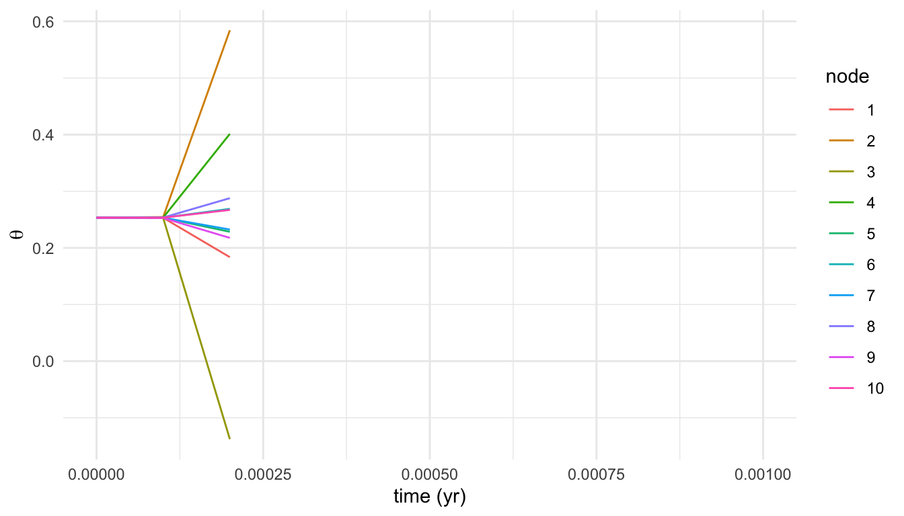
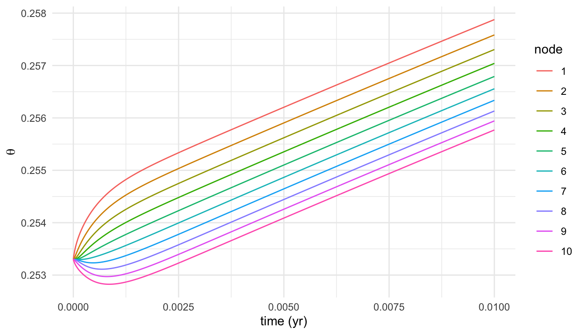
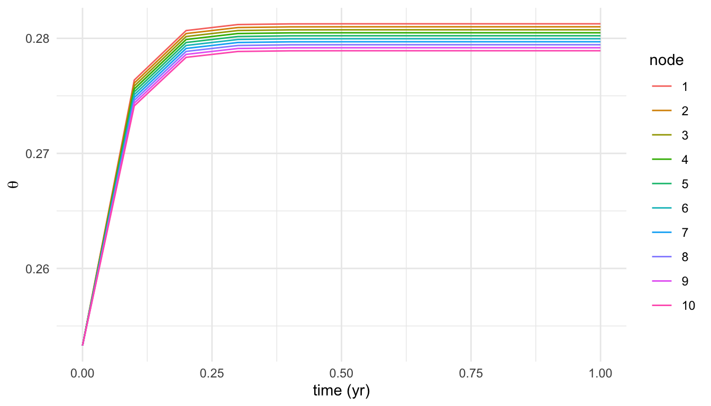

library(dplyr)
library(tidyr)
library(ggplot2)
library(deSolve)When the Richards equation fights back
tf24
soil-water
numerics
experimental
A standalone deSolve diagnosis of the numerical instability we hit adding a Richards-equation soil-water profile to the TF24 strategy — and why the fix is the solver, not the code.
We’ve recently been trying to expand the TF24 strategy to handle soil water, but our initial attempt encountered serious instability after we implemented the Richards equation. The symptom was unmissable: with anything but an absurdly small time step the integrator produced nonsense within a few steps — soil moisture leaping above saturation, going negative, then collapsing to NaN. The same pathology showed up whether the equation was implemented in C++ or in R, which is the first clue that the problem is mathematical rather than a coding slip.
This post works through a minimal R reproduction of that instability, shows the contrast between an explicit and an implicit solver, and ends with the diagnosis: the discretised Richards equation is stiff, and no amount of careful coding will rescue an explicit Runge–Kutta scheme from it. The full back-and-forth — including the \(\psi\)-based form, a single-bucket fallback, and a delay-equation experiment — lives in traitecoevo/plant discussion #444; here we keep just enough to stand on its own.
Note
This is a standalone numerical experiment. It prototypes the soil-water dynamics directly with deSolve and does not use the plant package API, so it isn’t pinned to a plant version — the point is the solver behaviour, which is independent of the model it will eventually live in.
The model
We track volumetric soil water content \(\theta\) on a vertical grid of \(n\) nodes. Each node exchanges water with its neighbours by Darcy flux, driven by gradients in the matric potential \(\psi\), plus gravity. This is the mixed form of the Richards equation, following Ireson et al. (2023):
\[\frac{\partial \theta}{\partial t} = -\frac{\partial q}{\partial z}, \qquad q = -K(\theta)\left(\frac{\partial \psi}{\partial z} - 1\right).\]
The constitutive relations — hydraulic conductivity \(K(\theta)\) and matric potential \(\psi(\theta)\) — are the usual power laws:
\[K(\theta) = K_\text{sat}\left(\frac{\theta}{\theta_\text{sat}}\right)^{2n_\psi + 3}, \qquad \psi(\theta) = a_\psi\left(\frac{\theta}{\theta_\text{sat}}\right)^{-n_\psi}.\]
pow <- function(x, y) x^y
soil_K_from_soil_theta <- function(theta, K_sat = 440.628,
soil_moist_sat = 0.453, n_psi = 4.8) {
K_sat * pow(theta / soil_moist_sat, 2 * n_psi + 3)
}
psi_from_soil_moist <- function(soil_moist, soil_moist_sat = 0.453,
a_psi = 8.7, n_psi = 4.8) {
a_psi * pow(soil_moist / soil_moist_sat, -n_psi)
}
params <- list(
soil_moist_sat = 0.453, # saturated water content (m^3/m^3)
K_sat = 440.628, # saturated conductivity (units below)
n_psi = 4.8, # pore-size distribution exponent
a_psi = 8.7, # air-entry scaling
b_infil = 8.0, # infiltration shape parameter
rain = 1, # rainfall forcing
n = 10 # number of soil nodes
)The right-hand side assembles the inter-node fluxes — an infiltration flux at the surface that shuts off as the top layer saturates, Darcy fluxes between interior nodes, and a free-drainage lower boundary (\(q = K\) at the bottom) — then differences them to get \(d\theta/dt\) at each node:
rates <- function(t, theta, params) {
with(as.list(c(theta, params)), {
psi <- psi_from_soil_moist(theta, soil_moist_sat = soil_moist_sat)
K <- soil_K_from_soil_theta(theta, soil_moist_sat = soil_moist_sat)
q <- rep(NA_real_, n + 1)
dz <- rep(2 / n, n)
dtheta_dt <- rep(NA_real_, n)
# top boundary: infiltration, shutting off as the top layer fills
q[1] <- rain * max(0.0, 1 - pow(theta[1] / soil_moist_sat, b_infil))
# interior boundaries: Darcy flux (Eq. 3 + 11, Ireson et al. 2023)
for (i in seq_len(n - 1)) {
dpsi_dz <- (psi[i + 1] - psi[i]) / dz[i]
q[i + 1] <- 0.5 * (K[i] + K[i + 1]) * (dpsi_dz - 1)
}
# lower boundary: free drainage (Eq. 13, Ireson et al. 2023)
q[n + 1] <- K[n]
# divergence of flux gives the rate of change at each node (Eq. 10)
for (i in seq_len(n)) {
dq_dz <- (q[i + 1] - q[i]) / dz[i]
dtheta_dt[i] <- -dq_dz
}
list(dtheta_dt)
})
}A small wrapper integrates the system and returns a long-format tibble, and a helper plots \(\theta\) at each depth over time:
solve_soil <- function(times, rates, state, method = "rk4", output = "theta") {
ode(y = state, times = times, func = rates, parms = params, method = method) %>%
as_tibble() %>%
pivot_longer(-time, names_to = "depth", values_to = output) %>%
mutate(depth = factor(as.integer(depth)))
}
plot_solution <- function(solution) {
solution %>%
ggplot(aes(x = time, y = theta, colour = depth)) +
geom_line() +
labs(x = "time (yr)", y = expression(theta), colour = "node") +
theme_minimal()
}
n <- 10
state <- rep(0.2533, n)The instability
Now integrate with the classic explicit Runge–Kutta solver (rk4) at a time step of \(10^{-4}\) yr — about an hour, which sounds harmlessly small:
fail <- solve_soil(times = seq(0, 1e-3, by = 1e-4),
rates = rates, state = state, method = "rk4")
plot_solution(fail)
NaN (gaps in the lines).
It detonates almost immediately. Printing the first few steps for the top nodes shows the runaway in numbers: a steady start, then values flung well past the physical range, then NaN:
fail %>%
filter(depth %in% c(1, 2, 3)) %>%
pivot_wider(names_from = depth, values_from = theta, names_prefix = "node ") %>%
head(4)# A tibble: 4 × 4
time `node 1` `node 2` `node 3`
<deSolve> <deSolve> <deSolve> <deSolve>
1 0e+00 0.2533000 0.2533000 0.2533000
2 1e-04 0.2531335 0.2544907 0.2527162
3 2e-04 0.1836168 0.5842660 -0.1377172
4 3e-04 NaN NaN NaNThis is not a bug in the right-hand side — the rates are continuous and correct. It’s the explicit integrator amplifying tiny errors faster than the dynamics damp them, the hallmark of a stiff system.
The reflex fix is to shrink the step. At \(10^{-5}\) yr (~5 minutes) RK4 does stay stable:
ok <- solve_soil(times = seq(0, 1e-2, by = 1e-5),
rates = rates, state = state, method = "rk4")
plot_solution(ok)
The infiltration front is smooth and physical — but look at the cost. That figure covers just \(1/100\) of a year and already took 1000 steps. Integrating a single year would need 100,000 explicit steps, and a forest simulation runs for centuries. This is not a viable solver for the model.
The fix: an implicit solver
Stiffness is solved by implicit methods, which evaluate the right-hand side at the end of the step and so remain stable at large step sizes. deSolve’s lsoda switches automatically between stiff and non-stiff modes. Swapping it in — and taking a step of \(0.1\) yr, ten thousand times larger than the one RK4 needed — integrates the whole year cleanly:
stable <- solve_soil(times = seq(0, 1, by = 0.1),
rates = rates, state = state, method = "lsoda")
plot_solution(stable)
Same right-hand side, same parameters, same initial condition — the only change is the solver, and the instability is gone. That is the clean experimental proof that the problem was stiffness all along.
Why this happens
The Richards equation is a nonlinear, degenerate elliptic–parabolic PDE. As Farthing & Ogden (2017) put it, it is “degenerate” because its strongly nonlinear coefficients approach zero in parts of the solution domain. Here the conductivity \(K(\theta) \propto \theta^{\,2n_\psi+3}\) spans many orders of magnitude across the profile: with \(n_\psi = 4.8\) that exponent is about \(12.6\), so a modest moisture gradient produces an enormous spread of local timescales between nodes. Fast nodes set the stability limit of an explicit step; slow nodes set how long you must integrate. The ratio between them is the stiffness, and it forces explicit methods into impractically tiny steps.
Takeaways for the soil-water work
- The instability is intrinsic to the discretised Richards equation, not to our implementation — it reproduced identically in C++ and R.
- Explicit Runge–Kutta is the wrong tool. The model needs an implicit / adaptive stiff solver (LSODA, or a BDF-type method) if we keep the full Richards profile.
- If a stiff solver proves awkward to embed in the strategy’s inner loop, the discussion explores cheaper alternatives — a single- or two-layer bucket model, or a Kirchhoff-transform linearisation (Ross 2003) — that sidestep the stiffness rather than solving it.
The next step for TF24 soil water is to decide between embedding an implicit solver and adopting a reduced-order bucket model; this experiment is what ruled out the naive explicit route.
References
- Farthing, M. W. & Ogden, F. L. (2017). Numerical solution of Richards’ equation: a review of advances and challenges. Soil Science Society of America Journal, 81(6), 1257–1269.
- Ireson, A. M. et al. (2023). The finite volume method for solving the Richards equation. Hydrology and Earth System Sciences.
- Ross, P. J. (2003). Modeling soil water and solute transport — fast, simplified numerical solutions. Agronomy Journal, 95(6), 1352–1361.
- traitecoevo/plant discussion #444 — Problem modelling soil water with Richards Equation. ```